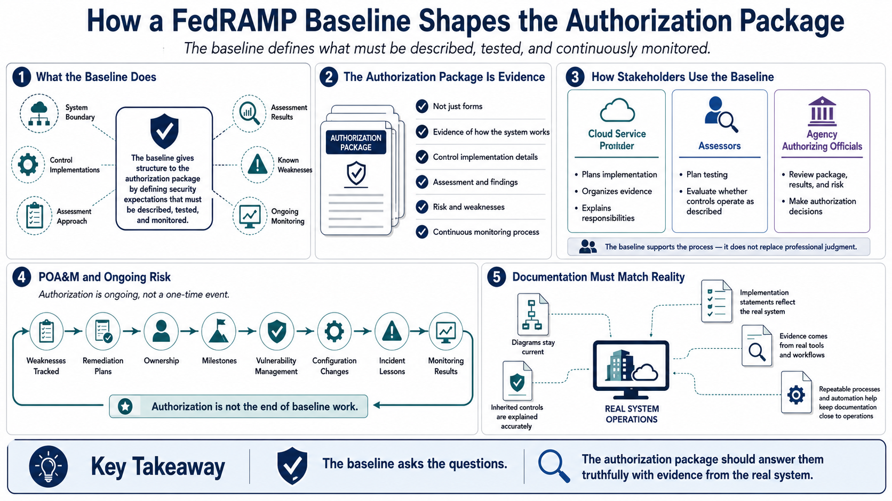

Baselines in the Authorization Package
Connecting to LMS... Progress: in progress

Narration
A FedRAMP baseline shapes the authorization package because it defines the security expectations that must be described, tested, and monitored. The package is not just a collection of forms. It is the body of evidence that explains the system boundary, the control implementations, the assessment approach, the results, the known weaknesses, and the ongoing monitoring process. The baseline gives structure to that evidence.
Different stakeholders use the baseline differently. The cloud service provider uses it to plan implementation, organize evidence, and explain responsibilities. Assessors use it to plan testing and evaluate whether the control implementations are operating as described. Agency authorizing officials use the package, assessment results, and risk information to make authorization decisions. The baseline supports that process, but it does not replace judgment.
Plans of action and milestones are part of the risk story. A POA&M is not just a defect list; it is a way to track weaknesses, remediation plans, ownership, milestones, and risk. Vulnerability management, configuration changes, incident lessons, and monitoring results all feed the continuing picture of whether the service remains within an acceptable risk posture. Authorization is not the end of baseline work.
Documentation must match the real system. If diagrams, implementation statements, inherited control descriptions, or evidence procedures drift away from reality, assessment and monitoring become less reliable. Strong providers keep documentation close to operations by using repeatable processes, automation where helpful, clear ownership, and evidence generated from real tools and workflows. The baseline asks the questions; the package should answer them with truth from the system.